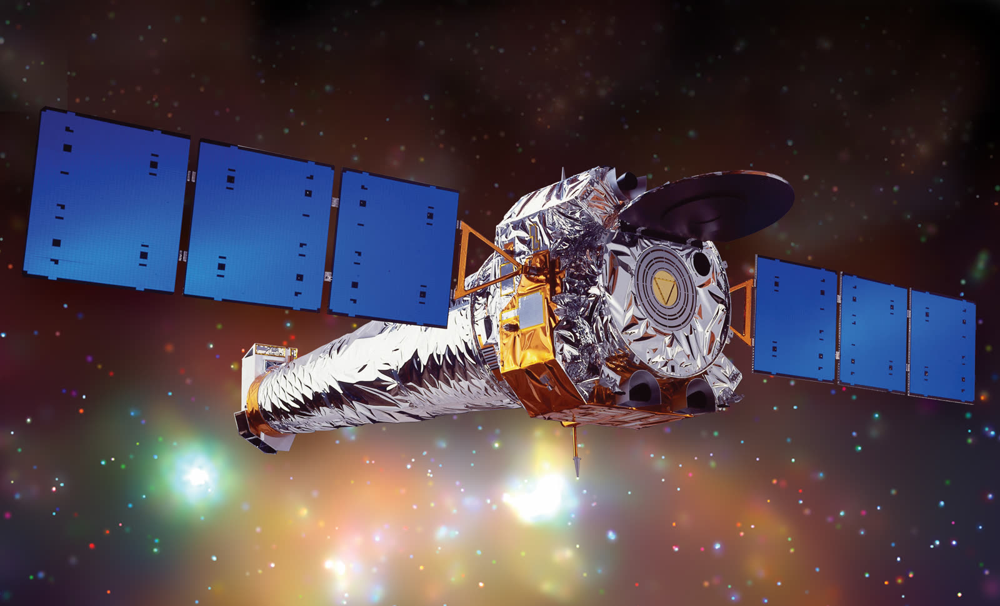
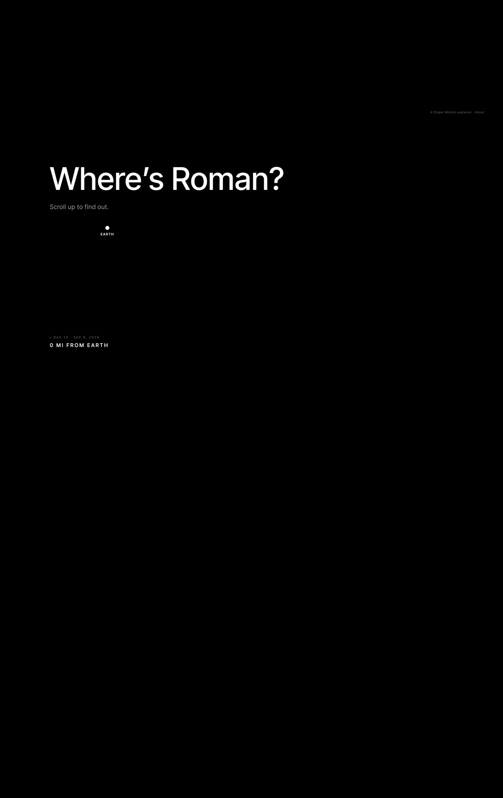

For Science Communication Leaders
Make your science tangible.
You have complex ideas, data, and discoveries to communicate. We turn them into interactive experiences your audiences can understand, feel, and take part in.
Specializing in astronomy and space science, using emerging technologies to let people experience what they cannot otherwise see, hear, or touch.
Where science becomes experience.
Client collaborations with scientific organizations, alongside original experiences developed inside the studio. One through-line runs across both. Take something that resists direct perception: a distance, a scale, a rhythm, a point of view we cannot occupy. Then build a way for people to encounter it firsthand.



“Facts help people understand.
Experiences help people care.”
Bring us the science. We’ll find the experience inside it.
Every engagement begins with Experience Discovery: a structured look at where the experiential potential actually lives inside your science, and which direction is worth building. Our specialty is astronomy and space science, but the method travels wherever a phenomenon is too vast, too small, too slow, too faint, or too abstract to perceive directly.
Find the opportunity
Clarify the science, the audience, the goal, and the constraints. Then locate the parts of the work that hold the greatest experiential potential.
Shape the direction
Explore possible forms through interaction, narrative, visualization, sound, and embodiment. The technology is chosen to serve the idea, never assumed in advance.
Make it tangible
Build a focused prototype, develop the full experience, or hand over a clear, evidenced direction that can be carried into a larger engagement.
A studio with
a point of view.
Proper Motion is a science experience studio. We partner with observatories, research institutions, museums, universities, and mission teams, designing and building the experiences that make their science perceptible to the people they are trying to reach. We also develop and release experiences of our own, built on questions we think are worth putting in front of people.
The studio was founded by Charlene Atlas, a creative technologist and experience designer whose work spans XR, interactive systems, and emerging technology. After years partnering with researchers and scientists at Microsoft and Meta, turning emerging technology into experiences that could be explored, understood, and evaluated, she started Proper Motion around a bigger question:
What if scientific discovery could be experienced instead of merely explained?
That question now has a specialty attached to it. In astronomy and space science, almost everything worth understanding is too far, too large, too faint, or too slow to encounter directly. That makes it the sharpest possible test of the studio’s craft.

Tell us what you’re trying to help people understand.
A mission to explain, a dataset worth opening up, a public program built on research you care about. If the idea is hard to see, hear, or picture, that is exactly where we start.